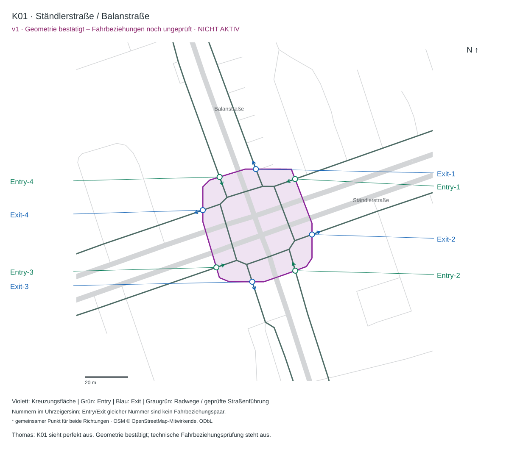
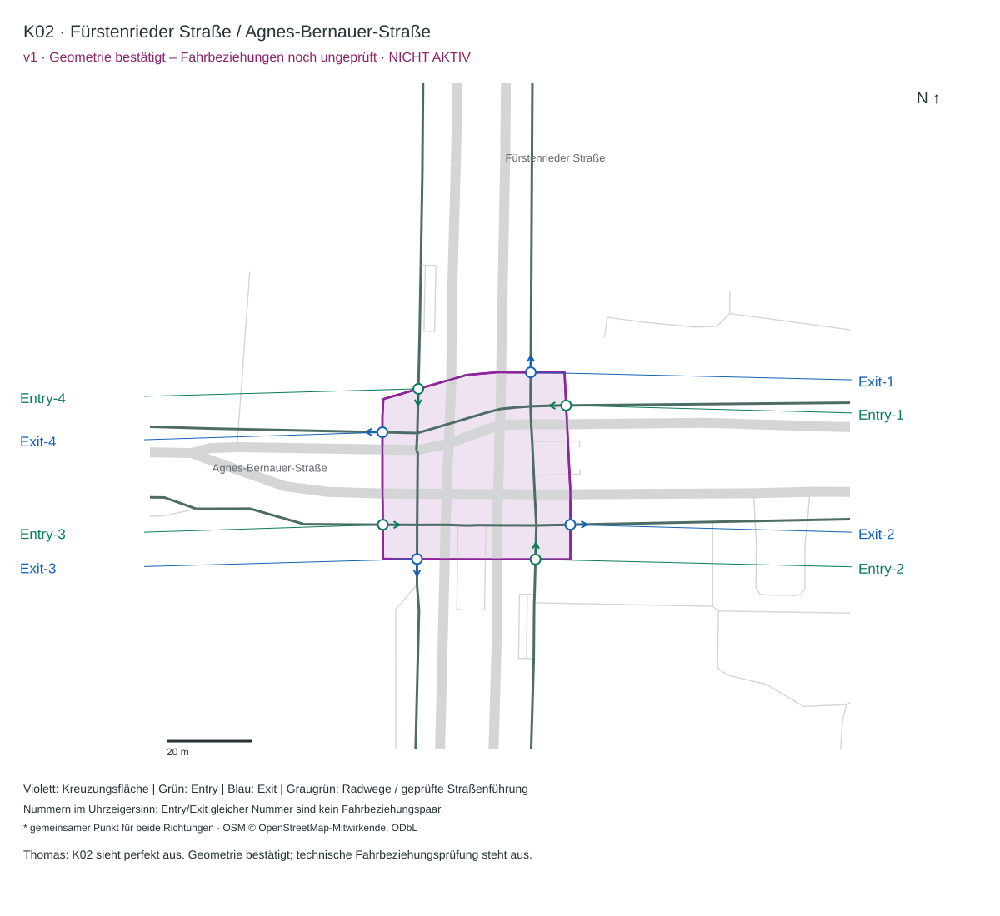
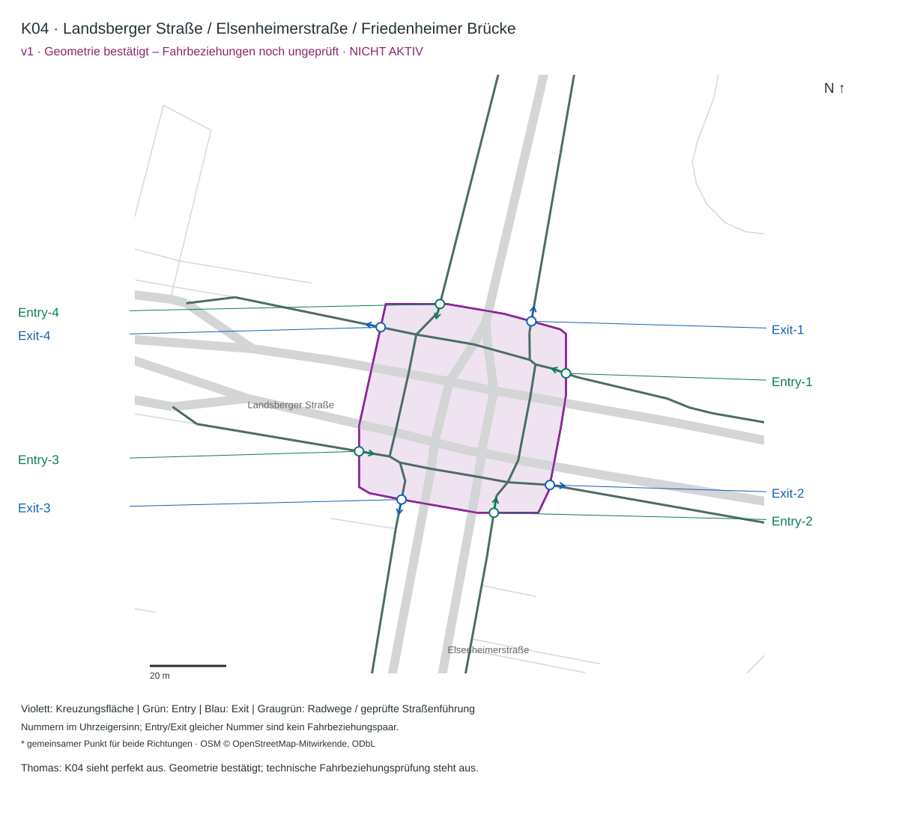
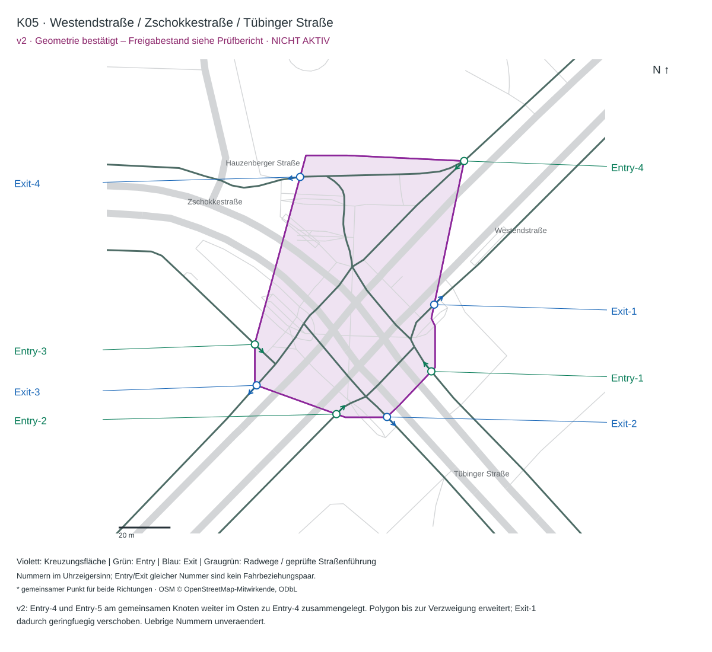
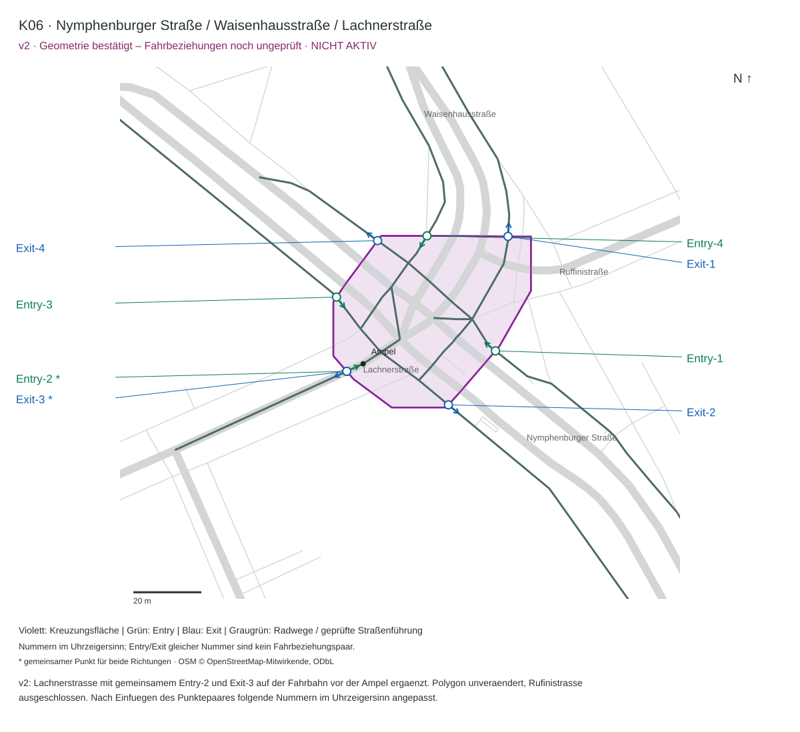
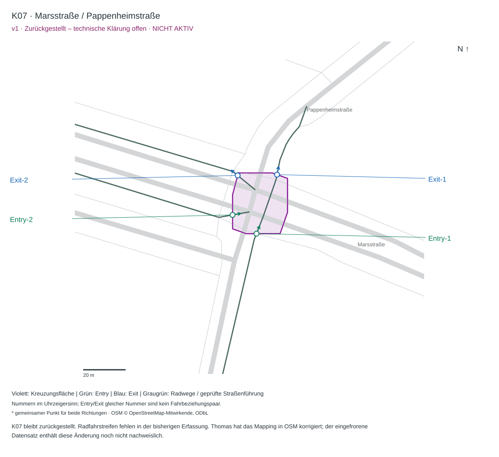
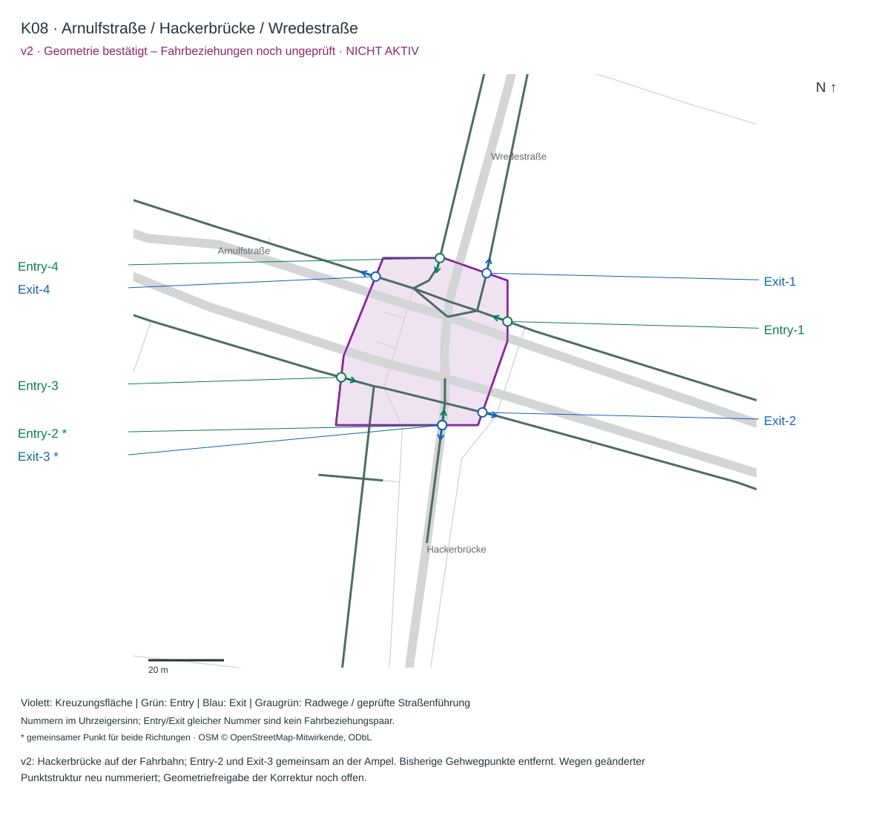
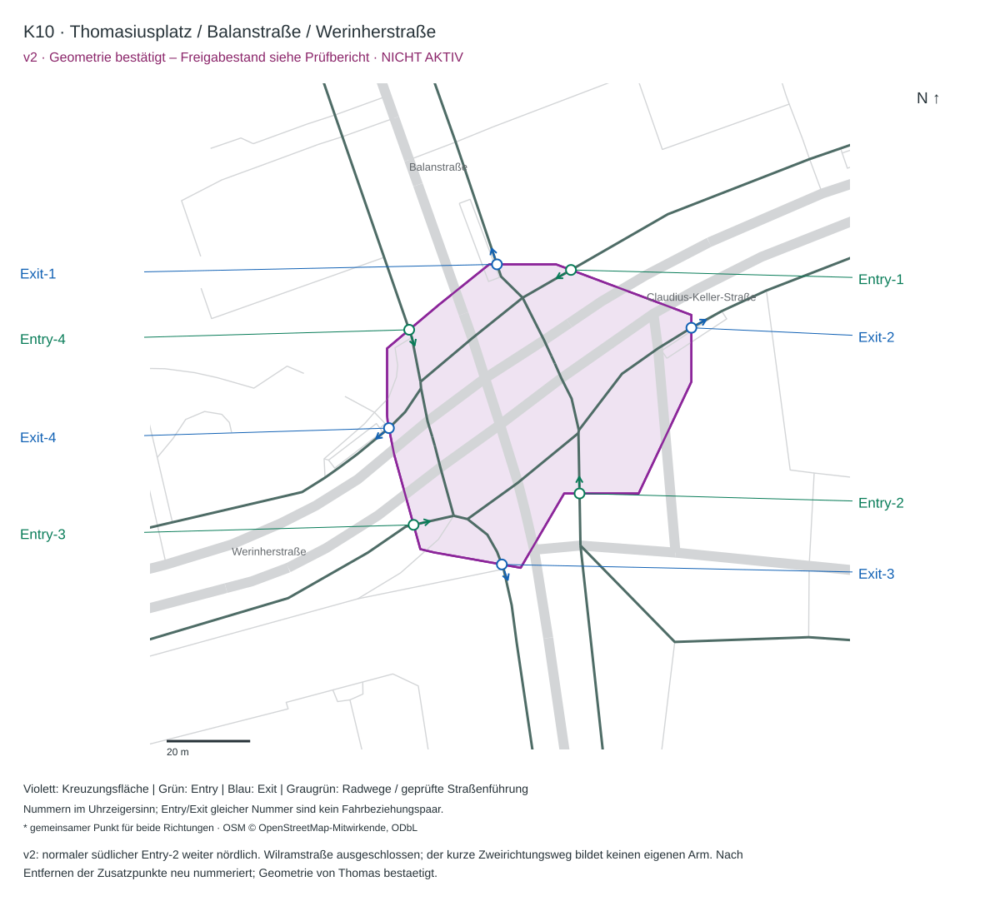

K01 · Ständlerstraße / Balanstraße
v1 · Geometrie bestätigt – Freigabestand siehe Prüfbericht

Geometrisch bestätigt: K01 v1, K02 v1, K03 v1, K04 v1, K05 v2, K06 v2, K08 v2, K10 v2. Zurückgestellt: K07 v1. Dauerhaft ausgeschlossen: K09 v1.
Der aktuelle Aktivierungsstand und verbleibende Ausnahmen stehen im Freigabebericht.
K05 v2: gemeinsamer Entry-4 am östlichen Verzweigungspunkt; Fläche erweitert, Exit-1 leicht verschoben. K06 v2: Lachnerstraße mit Entry-2 / Exit-3 auf der Fahrbahn; Fläche unverändert, folgende Nummern angepasst.
In K08 v2 liegen Entry-2 und Exit-3 gemeinsam an der Fahrbahnampel der Hackerbrücke. In K10 v2 liegt der normale Entry-2 weiter nördlich; Wilramstraße ist ausgeschlossen.
Rückmeldung zum Beispiel: „K05 v2 passt“. Nummern folgen dem Uhrzeigersinn und bezeichnen keine Fahrbeziehungspaare. Ein Klick öffnet das PNG in voller Größe.
v1 · Geometrie bestätigt – Freigabestand siehe Prüfbericht

v1 · Geometrie bestätigt – Freigabestand siehe Prüfbericht

v1 · Geometrie bestätigt – Freigabestand siehe Prüfbericht

v1 · Geometrie bestätigt – Freigabestand siehe Prüfbericht

v2 · Geometrie bestätigt – Freigabestand siehe Prüfbericht

v2 · Geometrie bestätigt – Freigabestand siehe Prüfbericht

v1 · Zurückgestellt – technische Klärung offen

v2 · Geometrie bestätigt – Freigabestand siehe Prüfbericht

v1 · Dauerhaft ausgeschlossen – Fall geschlossen

v2 · Geometrie bestätigt – Freigabestand siehe Prüfbericht
